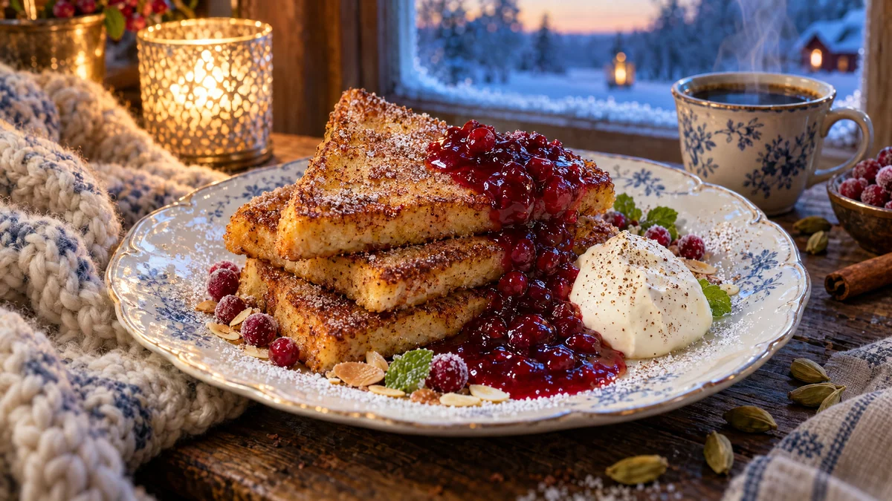

RESTFEST · RECEPTDessert · Fika & bakning
Fattiga riddare med varma lingon och kardemummagrädde
Torrt bröd, mjölk, ägg och lingonen i frysen. Gyllene, krispiga skivor rullas i kanelsocker medan de är heta och serveras med varm, glänsande lingonkompott och fluffig grädde som doftar kardemumma. Svensk husmanskost som dessert på en finare restaurang.
- Förberedelse
- 10 min
- Tillagning
- 15 min
- Portioner
- 4 (8 skivor)
- Nivå
- Nybörjare
 Det här behöver du
Det här behöver du
Tryck på + vid det du behöver köpa.
Varma lingon
Kardemummagrädde
Fattiga riddare
Kanelsocker
Till servering
Gör så här
- Lägg 3 dl lingon, socker och 2 msk vatten i en kastrull. Koka upp på medelvärme och låt sjuda i 3–4 minuter, tills en del bär spricker men de flesta är hela.
- Rör ut potatismjölet i 1 msk kallt vatten och rör ner det i lingonen. Låt det bara koka upp, ta sedan genast av kastrullen från värmen. Potatismjöl som kokar länge blir trådigt och tappar sin glans.
- Vispa grädden med florsocker och kardemumma till mjuka toppar. Ställ den kallt.
- Vispa ihop ägg, mjölk, socker, vaniljsocker, kanel och salt i en djup tallrik eller form. Blanda kanelsockret på en flat tallrik.
- Doppa brödskivorna i äggblandningen, en i taget, ca 10–15 sekunder per sida. Riktigt torrt bröd tål längre tid. Skivorna ska vara genomblöta men inte falla isär.
- Smält 1 msk smör i en stekpanna på medelvärme. Stek skivorna 2–3 minuter per sida tills de är gyllenbruna. Är värmen för hög blir skivorna mörka innan mitten har satt sig. Ta nytt smör till varje omgång.
- Vänd de heta skivorna direkt i kanelsockret, på båda sidor. Håll dem varma i ugnen på 100 grader medan du steker resten.
Dekoration och servering
- Skär skivorna diagonalt till trianglar och stapla två eller tre lätt förskjutet på varje tallrik.
- Skeda den varma lingonkompotten över hörnet så att den rinner ner och bildar en blank pöl.
- Lägg en quenelle kardemummagrädde bredvid, formad med två matskedar.
- Strö över några frysta, frostiga lingon, mandelspån och ett par myntablad. Pudra lätt med florsocker genom en sil.
- Servera på vita tallrikar så att det röda lyser, gärna med en kopp kaffe.
Mått och ugnstemperaturer
Måtten är svenska (dl, msk, tsk, krm). Ugnstemperaturerna gäller vanlig ugn med över- och undervärme; med varmluft, sänk med 20 grader.